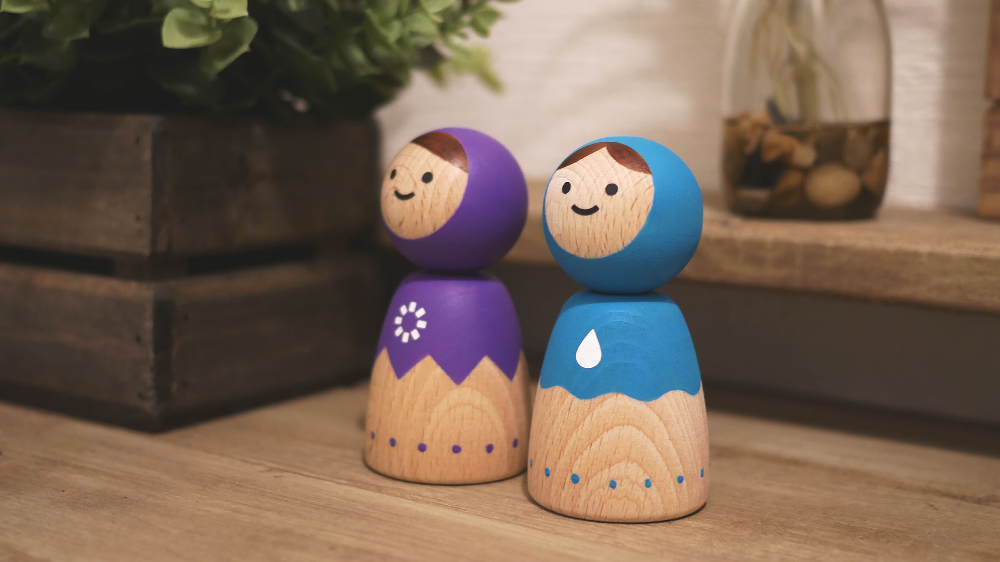
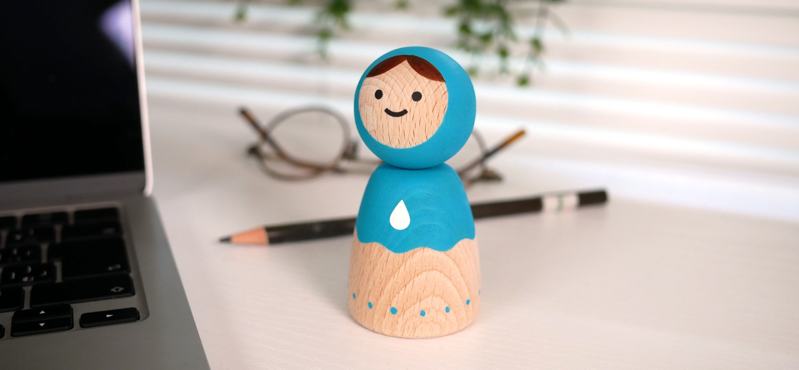
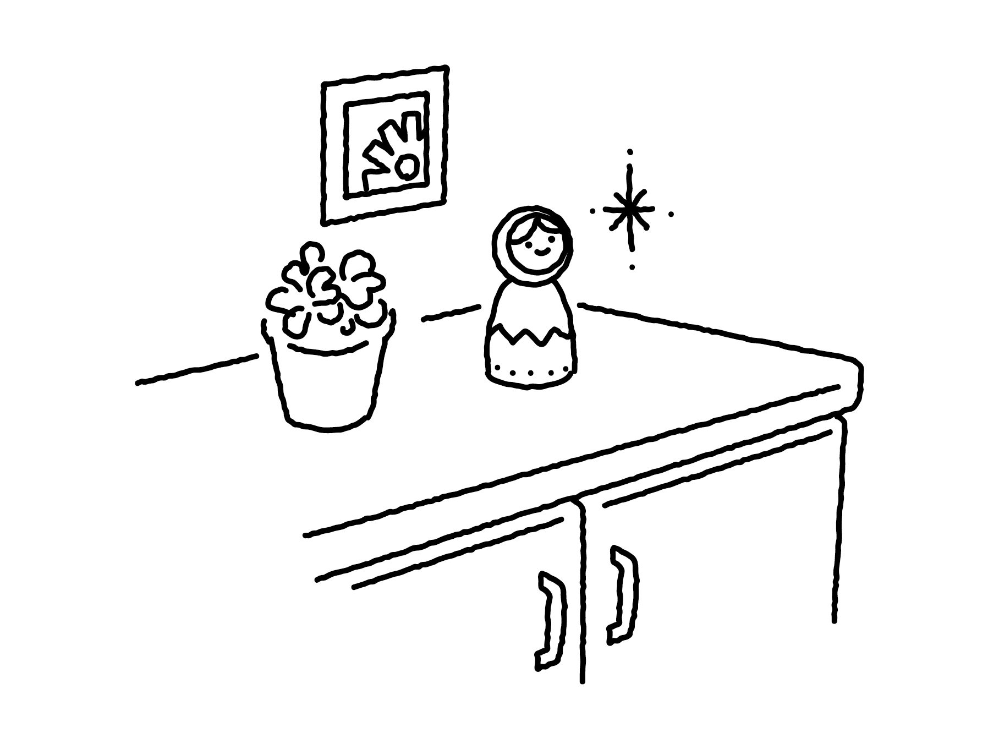
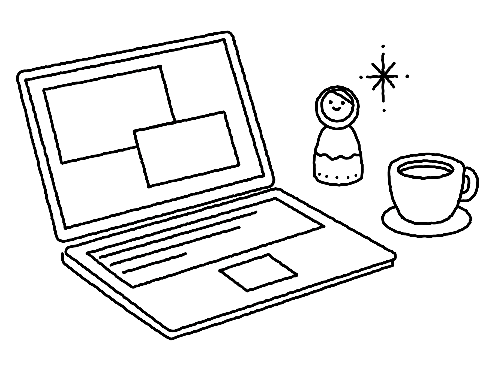
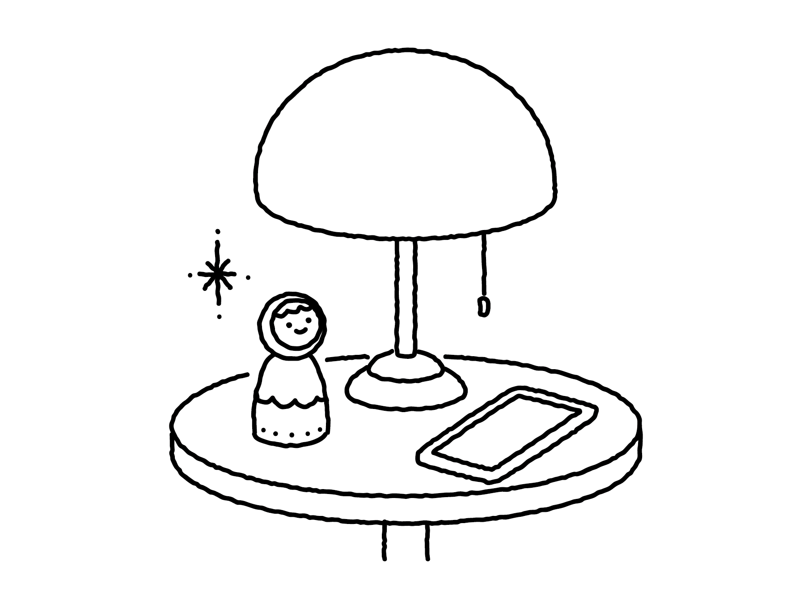
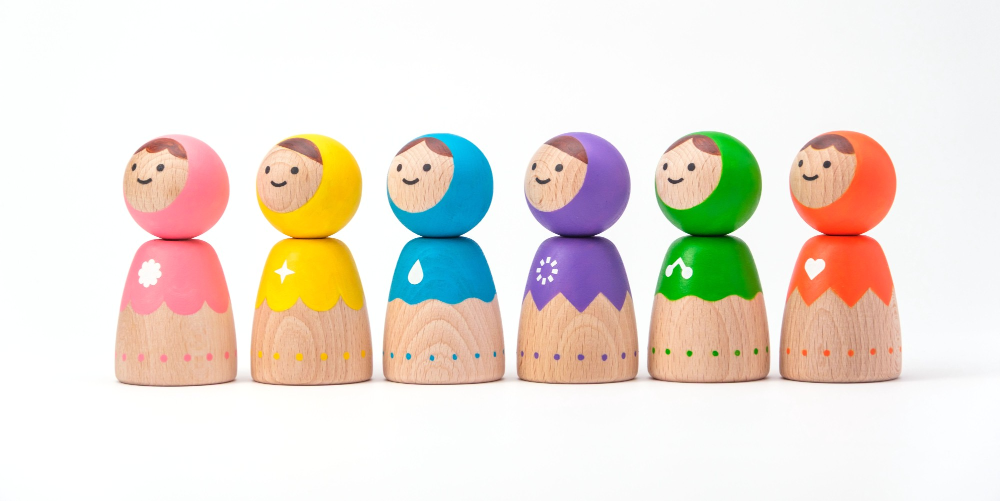

A little friend in the everyday.

なんでもない日々の、ちいさなともだち。
毎日を一生懸命生きていると、
知らず知らずのうちに、肩肘を張ってしまうことがあります。
もっとちゃんと頼もしく、完璧でいなくちゃ、と。
そんなとき、ふと目をやると
そこにぽつんと佇む、小さな木の存在。
優しく見上げて、見つめてくるその姿は、
「無理せず自分らしくね！」と、
無言で教えてくれているみたい。
kiiboは、あなたの暮らしの中で
ちょっとだけ「こうありたい」を思い出させてくれる。
そんな小さなお守りのような存在です。

kiiboのある暮らし
どんな場所でもそっと側に置くだけで、目が合います。
-

01朝、玄関で
「いってきます」と目を合わせて、
今日のわたしで出かけよう。 -

02昼、デスクのすみで
がんばりすぎたら、ちょっとひと息。
わたしらしさを思い出す。 -

03夜、ベッドサイドで
「今日もおつかれさま」。
穏やかな気持ちで、一日を閉じる。

kiiboの6つのカラーテーマ
kiiboには、6つのカラーとそれぞれのテーマがあります。
あなたが大切にしたい共感できるテーマはありますか？
ぜひ、あなたにぴったりのkiiboを探してみてください。
-
ターコイズブルー
＜心身の健康＞
めぐり整う、心地良いリズム。
-
ベネシャンローズ
＜優しさ＞
柔らかい私で、世界と出会う。
-
ブリリアントグリーン
＜安らぎ＞
心の奥に、静かな森をひとつ。
-
バーミリオン
＜情熱＞
私のドラマは、私が主演。
-
ウルトラマリンバイオレット
＜直感＞
ひらめきは、未来からの手紙。
-
アゾイエローミディアム
＜個性の発揮＞
輝き出す、まだ見ぬ可能性の種。
● 商品詳細
- 価格
- Lサイズ：6,600円（税込：7,260円）
Mサイズ：4,900円（税込：5,390円）
L・Mセット：9,900円（税込：10,890円） - 発売日
- 2026年11月6日
- 素材
- ブナ（ビーチ材）
- サイズ
- Lサイズ：直径5.3cm × 高さ10.5cm
Mサイズ：直径4.4cm × 高さ8.8cm - お手入れ方法
-
置き場所
日焼けや色あせを防ぐため、直射日光のあたらない屋内にお飾りください。
ふだんのお手入れ
ほこりは、乾いたやわらかい布でやさしく拭き取ってください。水拭きや、洗剤・アルコールの使用はお避けください。
- 注意事項
-
- 本品は観賞用のオブジェです。玩具ではありません。
- 小さなお子様やペットの手の届かない場所に飾り、口に入れたり、かじったりさせないでください。
- 高温になる場所（直射日光、夏の車内、暖房器具の近くなど）に置かないでください。変色や変形、色移りの原因となります。
- 火気に近づけないでください。
- 水濡れや湿気は、変色や割れの原因になります。
- 処分はお住まいの自治体の区分に従ってください。
- 経年により、徐々に変色する場合があります。
もう少し、kiiboを近くに。
kiiboのことをもっと知りたい方へ。
まだどこにも出ていないお知らせを、
LINEでお届けしています。
LINE BENEFITS
LINE友だち特典
友だち追加で、限定壁紙をプレゼント
6色のカラーテーマから、お好きなものを選べます。
さらに、kiiboの最新情報をいち早くお届けします。
- kiiboの新商品
- LINE友だち限定の先行予約販売やノベルティ提供
- 作家に関する限定コンテンツなど
スマホのカメラで
このQRコードを読み取ってください
kiiboを、最初のひとつに。
kiiboは、株式会社BEtの「COプロジェクト」の第一弾として生まれました。
始まりは、クリエイター支援の事業を通じてご縁のあったサタケシュンスケさんと、「一緒に何かできたら」と話したことでした。何をつくるかも決めず、まずはお互いを知るところから。そのなかで「長く愛されるものをつくりたい」という想いが重なり、プロジェクトが動き出しました。
たどり着いたのは、時代が移り変わっても暮らしのそばにあり続けてきた伝統工芸たちでした。そこにはいつも、人の願いや希望が込められてきました。
kiiboは、そんな伝統工芸の在り方を手がかりに、今の暮らしに寄り添うかたちを考えてデザインしました。何年先も、あなたの暮らしの片隅にいられるように。
CO PROJECT
COプロジェクトとは
株式会社BEtが、想いを持つクリエイターや企業と共に、本当に良いと思えるもの、末永く愛されるものをつくり、世の中へ届けていくプロジェクトです。
- Co-
- 共に
- 劫（こう）
- とても長い時間
「CO」という名前には、共に、とても長く愛されるものを生み出していきたい、という想いを込めています。